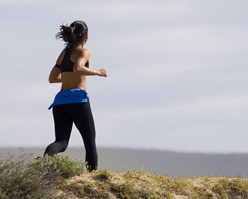

Running offers many health benefits, and some running achievements warrant bragging rights. Yet, neither fitness nor pride provide sustainable motivation. Rather, it's the JOY of running that drives me—and hopefully you—to lace up those shoes again and again and hit the trail.
Several factors influence the level of enjoyment you experience while running:
- Wearing shoes that properly align and cushion your joints and match the terrain.
- Seeking guidance that motivates you and sets you up for success.
- Preparing for a run by wearing clothes that correspond with the weather and bringing gear that supports the distance.
- Warming up and cooling down your body in a way that supports muscle health.
- Choosing a route that stimulates your mind and aligns with your goals.
- Engaging with the running community.
The information on this website addresses all these factors and will help you find joy in running.

Attribution: "Mike" Michael L. Baird, CC BY 2.0